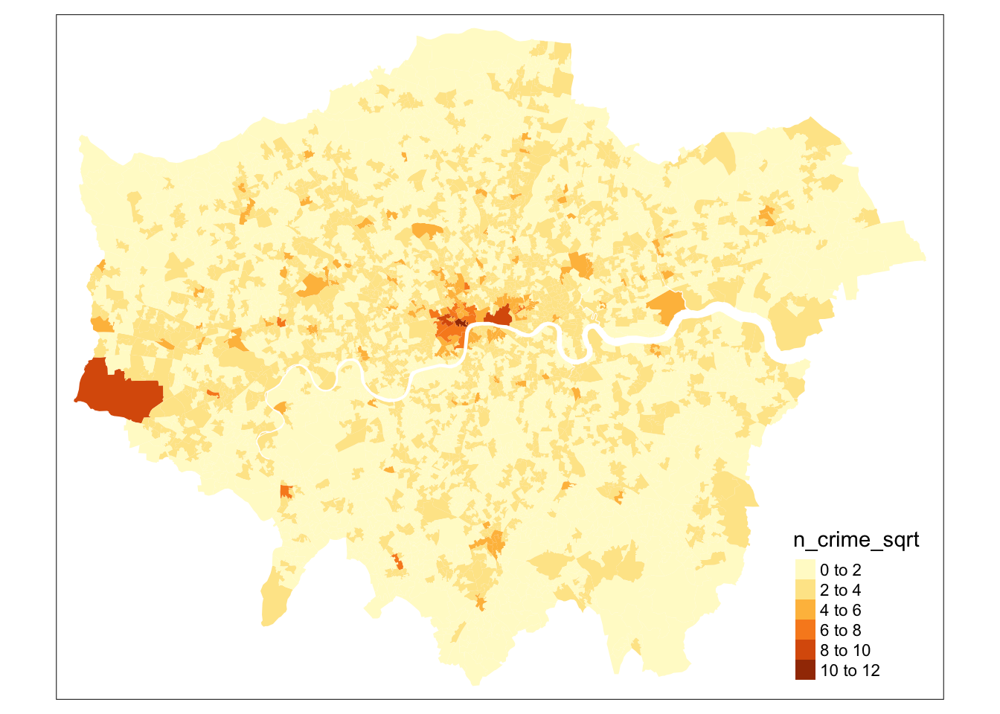

5 Exploratory spatial data analysis
5.1 Introduction
This week, we focus on the second of the two key properties of spatial data: spatial heterogeneity. With the underlying process (or processes) that govern a spatial variable likely to vary across space, a single global relationship for an entire region of study may not adequately model the process that governs outcomes in any given location of the study region. As a result, multiple methods have been developed to incorporate ‘space’ into traditional regression models, including spatial lag models, spatial error models, and Geographical Weighted Regression.
This week provides the building blocks to conducting a statistical and spatial investigation into the relationships between spatial variables, looking at the concept of Exploratory Spatial Data Analysis (ESDA). We then look at the three types of spatial regression models in turn to understand their methodology and potential advantages and limitations in accounting for space when modelling relationships. However, before we move on to ESDA, we will look into some aspects of data prepration, data cleaning, and creating a tidy dataset.
In the first part of this week’s session we will start by creating a tidy dataset using some data from the UK 2011 Census of Population. In the second part of this week’s session we will explore potential factors that may contribute to the crime rate in London. We conduct an ESDA of these variables, followed by statistical and spatial regression analysis to determine whether our variables contribute to crime in our area of study.
This week is structured by three short lecture videos, two assignments that you need to do in preparation for Friday’s seminar, and the practical material. As always, this week’s reading list is availble on the UCL library reading list page for the course.
5.1.1 Video: Overview
5.2 Tidy data
Over the past weeks a lot of information has come your way, diving deep into the world of Spatial Data Science. However, whilst you are slowly becoming proficient in using R and Python to solve complex (spatial) problems, it is now a good moment to start thinking about data themselves and how they are organised. This is crucial for when you are moving on to working on your own projects where you have to source data yourselves: the vast majority of the data you will find in the public domain (or private domain for that matter) will be dirty data. With dirty data we mean data that needs some form of pre-processing, cleaning, and linkage before you can use it for your analysis. Exploratory Spatial Data Analysis very much starts with your data preparation.
In the following, you will learn a consistent way to structure your data in R: tidy data. Tidy data, as formalised by R Wizard Hadley Wickham in his contribution to the Journal of Statistical Software is not only very much at the core of the tidyverse R package, but also of general importance when organising your data. In the words, of the Wizard:
Once you have tidy data and the tidy tools provided by packages in the tidyverse, you will spend much less time munging data from one representation to another, allowing you to spend more time on the analytic questions at hand.
5.2.1 Video: Tidy data
5.2.2 What do tidy data look like?
You can represent the same underlying data in multiple ways. The example below, taken from the the tidyverse package and described in the R for Data Science book, shows that the same data can organised in four different ways.
Table 1:
## # A tibble: 6 x 4
## country year cases population
## <chr> <int> <int> <int>
## 1 Afghanistan 1999 745 19987071
## 2 Afghanistan 2000 2666 20595360
## 3 Brazil 1999 37737 172006362
## 4 Brazil 2000 80488 174504898
## 5 China 1999 212258 1272915272
## 6 China 2000 213766 1280428583Table 2:
## # A tibble: 12 x 4
## country year type count
## <chr> <int> <chr> <int>
## 1 Afghanistan 1999 cases 745
## 2 Afghanistan 1999 population 19987071
## 3 Afghanistan 2000 cases 2666
## 4 Afghanistan 2000 population 20595360
## 5 Brazil 1999 cases 37737
## 6 Brazil 1999 population 172006362
## 7 Brazil 2000 cases 80488
## 8 Brazil 2000 population 174504898
## 9 China 1999 cases 212258
## 10 China 1999 population 1272915272
## 11 China 2000 cases 213766
## 12 China 2000 population 1280428583Table 3:
## # A tibble: 6 x 3
## country year rate
## * <chr> <int> <chr>
## 1 Afghanistan 1999 745/19987071
## 2 Afghanistan 2000 2666/20595360
## 3 Brazil 1999 37737/172006362
## 4 Brazil 2000 80488/174504898
## 5 China 1999 212258/1272915272
## 6 China 2000 213766/1280428583Table 4a:
## # A tibble: 3 x 3
## country `1999` `2000`
## * <chr> <int> <int>
## 1 Afghanistan 745 2666
## 2 Brazil 37737 80488
## 3 China 212258 213766Table 4b:
## # A tibble: 3 x 3
## country `1999` `2000`
## * <chr> <int> <int>
## 1 Afghanistan 19987071 20595360
## 2 Brazil 172006362 174504898
## 3 China 1272915272 1280428583None of these representations are wrong per se, however, not are equally easy to use. Only Table 1 can be considered as tidy data because it is the only table that adheres to the three rules that make a dataset tidy:
- Each variable must have its own column.
- Each observation must have its own row.
- Each value must have its own cell.
.](images/week05/05_a_tidy_data.png)
Figure 5.1: A visual representation of tidy data by Hadley Wickham.
Fortunately, there are some functions in the tidyr and dplyr packages, both part of the tidyverse that will help us cleaning and preparing our datasets to create a tidy dataset. The most important and useful functions are:
| Package | Function | Use to |
|---|---|---|
| dplyr | select | select columns |
| dplyr | filter | select rows |
| dplyr | mutate | transform or recode variables |
| dplyr | summarise | summarise data |
| dplyr | group by | group data into subgropus for further processing |
| tidyr | pivot_longer | convert data from wide format to long format |
| tidyr | pivot_wider | convert long format dataset to wide format |
Keep in mind that if you encounter a function in a piece of R code that you have not seen before and you are wondering what it does that you can get access the documentation through ?name_of_function, e.g. ?pivot_longer. For any mature R package, the documentation contains a list of arguments that the function takes as well as a set of usage examples.
5.2.3 Example: Creating tidy data
Now we know what consitute tidy data, we can put this into practice with an example using some data from the Office for National Statistics. Let’s say we are asked by our boss to analyse some data on the ethnic background of the UK population, for instance, because we want to get some insights into the relationship between COVID-19 and ethnic background. Our assignment is to calculate the relative proportions of each ethnic group within the administrative geography of the Middle layer Super Output Area (MSOA). In order to do this, we have been given a file that contains data on ethnicity by age group at the MSOA-level of every person in the 2011 UK Census who is 16 year or older. Download the file to your own computer and set up your data directory in the same fashion as you did last week. You can also decide on setting up your own folder structure, no problem, just make sure that you update the file paths in the practical to match the file paths on your own computers. Also, make sure that you unzip the data.
File download
| File | Type | Link |
|---|---|---|
| Etnicity by age group 2011 Census of Population | zip |
Download |
We start by making sure our tidyverse is loaded into R and using the read_csv() function to read our .csv file.
# load the tidyverse
library(tidyverse)
# read data into dataframe
df <- read_csv('raw/population/eth_pop_2011/msoa_eth2011_ew_16plus.csv')
# inspect the dataframe: number of columns
ncol(df)## [1] 385## [1] 7201## # A tibble: 7,201 x 385
## msoa11cd `Sex: All perso… `Sex: All perso… `Sex: All perso… `Sex: All perso…
## <chr> <dbl> <dbl> <dbl> <dbl>
## 1 E020025… 215 206 204 0
## 2 E020025… 175 170 168 1
## 3 E020025… 140 128 128 0
## 4 E020025… 160 155 154 0
## 5 E020025… 132 130 130 0
## 6 E020025… 270 263 261 0
## 7 E020025… 124 119 117 0
## 8 E020025… 150 125 117 0
## 9 E020025… 178 166 159 0
## 10 E020025… 162 159 157 0
## # … with 7,191 more rows, and 380 more variables: `Sex: All persons; Age: Age
## # 16 to 17; Ethnic Group: White: Gypsy or Irish Traveller; measures:
## # Value` <dbl>, `Sex: All persons; Age: Age 16 to 17; Ethnic Group: White:
## # Other White; measures: Value` <dbl>, …It is clear that the data are not directly suitable to establish the proportion of each ethnic group within the population of each MSOA because the data are split out over multiple columns. Let’s inspect the names of the columns to get a better idea of the structure of our data set.
## [1] "msoa11cd"
## [2] "Sex: All persons; Age: Age 16 to 17; Ethnic Group: All categories: Ethnic group; measures: Value"
## [3] "Sex: All persons; Age: Age 16 to 17; Ethnic Group: White: Total; measures: Value"
## [4] "Sex: All persons; Age: Age 16 to 17; Ethnic Group: White: English/Welsh/Scottish/Northern Irish/British; measures: Value"
## [5] "Sex: All persons; Age: Age 16 to 17; Ethnic Group: White: Irish; measures: Value"
## [6] "Sex: All persons; Age: Age 16 to 17; Ethnic Group: White: Gypsy or Irish Traveller; measures: Value"
## [7] "Sex: All persons; Age: Age 16 to 17; Ethnic Group: White: Other White; measures: Value"
## [8] "Sex: All persons; Age: Age 16 to 17; Ethnic Group: Mixed/multiple ethnic group: Total; measures: Value"
## [9] "Sex: All persons; Age: Age 16 to 17; Ethnic Group: Mixed/multiple ethnic group: White and Black Caribbean; measures: Value"
## [10] "Sex: All persons; Age: Age 16 to 17; Ethnic Group: Mixed/multiple ethnic group: White and Black African; measures: Value"
## [11] "Sex: All persons; Age: Age 16 to 17; Ethnic Group: Mixed/multiple ethnic group: White and Asian; measures: Value"
## [12] "Sex: All persons; Age: Age 16 to 17; Ethnic Group: Mixed/multiple ethnic group: Other Mixed; measures: Value"
## [13] "Sex: All persons; Age: Age 16 to 17; Ethnic Group: Asian/Asian British: Total; measures: Value"
## [14] "Sex: All persons; Age: Age 16 to 17; Ethnic Group: Asian/Asian British: Indian; measures: Value"
## [15] "Sex: All persons; Age: Age 16 to 17; Ethnic Group: Asian/Asian British: Pakistani; measures: Value"
## [16] "Sex: All persons; Age: Age 16 to 17; Ethnic Group: Asian/Asian British: Bangladeshi; measures: Value"
## [17] "Sex: All persons; Age: Age 16 to 17; Ethnic Group: Asian/Asian British: Chinese; measures: Value"
## [18] "Sex: All persons; Age: Age 16 to 17; Ethnic Group: Asian/Asian British: Other Asian; measures: Value"
## [19] "Sex: All persons; Age: Age 16 to 17; Ethnic Group: Black/African/Caribbean/Black British: Total; measures: Value"
## [20] "Sex: All persons; Age: Age 16 to 17; Ethnic Group: Black/African/Caribbean/Black British: African; measures: Value"
## [21] "Sex: All persons; Age: Age 16 to 17; Ethnic Group: Black/African/Caribbean/Black British: Caribbean; measures: Value"
## [22] "Sex: All persons; Age: Age 16 to 17; Ethnic Group: Black/African/Caribbean/Black British: Other Black; measures: Value"
## [23] "Sex: All persons; Age: Age 16 to 17; Ethnic Group: Other ethnic group: Total; measures: Value"
## [24] "Sex: All persons; Age: Age 16 to 17; Ethnic Group: Other ethnic group: Arab; measures: Value"
## [25] "Sex: All persons; Age: Age 16 to 17; Ethnic Group: Other ethnic group: Any other ethnic group; measures: Value"
## [26] "Sex: All persons; Age: Age 18 to 19; Ethnic Group: All categories: Ethnic group; measures: Value"
## [27] "Sex: All persons; Age: Age 18 to 19; Ethnic Group: White: Total; measures: Value"
## [28] "Sex: All persons; Age: Age 18 to 19; Ethnic Group: White: English/Welsh/Scottish/Northern Irish/British; measures: Value"
## [29] "Sex: All persons; Age: Age 18 to 19; Ethnic Group: White: Irish; measures: Value"
## [30] "Sex: All persons; Age: Age 18 to 19; Ethnic Group: White: Gypsy or Irish Traveller; measures: Value"
## [ reached getOption("max.print") -- omitted 355 entries ]The column names are all awfully long and it looks like that the data have been split out into age groups. Further to this, the data contain within group total counts: all categories, white total, mixed/multiple ethnic group total, and so on. You can also try using View(df) or use any other form of spreadsheet software (e.g. Microsoft Excel) to browse through the dataset to get a better idea of what is happening and get a better idea of the structure of the data.
Although the data is messy and we will need to reorganise our data set, it does look there is some form of structure present that we can exploit: the various columns with population counts for each ethnic group are repeated for each of the different age groups. This means that we can go through the data frame in steps of equal size to select the data we want: starting from column 2 (column 1 only contains the reference to the adminsitrative geography) we want to select all 24 columns of data for that particular age group. We can create a for loop that does exactly that:
# loop through the columns of our data set
for (column in seq(2,ncol(df),24)) {
# index number of start column of age group
start <- column
# index number of end column of age group
stop <- column + 23
# print results
print(c(start,stop))
}## [1] 2 25
## [1] 26 49
## [1] 50 73
## [1] 74 97
## [1] 98 121
## [1] 122 145
## [1] 146 169
## [1] 170 193
## [1] 194 217
## [1] 218 241
## [1] 242 265
## [1] 266 289
## [1] 290 313
## [1] 314 337
## [1] 338 361
## [1] 362 385For each age group in our data, the printed values should (!) correspond with the index number of the start column of the age group and the index number of the end column of the age group, respectively. Let’s do a sanity check.
## # A tibble: 7,201 x 1
## `Sex: All persons; Age: Age 16 to 17; Ethnic Group: All categories: Ethnic g…
## <dbl>
## 1 215
## 2 175
## 3 140
## 4 160
## 5 132
## 6 270
## 7 124
## 8 150
## 9 178
## 10 162
## # … with 7,191 more rows## # A tibble: 7,201 x 1
## `Sex: All persons; Age: Age 16 to 17; Ethnic Group: Other ethnic group: Any …
## <dbl>
## 1 0
## 2 0
## 3 0
## 4 0
## 5 0
## 6 0
## 7 0
## 8 0
## 9 0
## 10 0
## # … with 7,191 more rows## # A tibble: 7,201 x 1
## `Sex: All persons; Age: Age 18 to 19; Ethnic Group: All categories: Ethnic g…
## <dbl>
## 1 157
## 2 129
## 3 102
## 4 162
## 5 121
## 6 217
## 7 126
## 8 231
## 9 175
## 10 95
## # … with 7,191 more rows## # A tibble: 7,201 x 1
## `Sex: All persons; Age: Age 18 to 19; Ethnic Group: Other ethnic group: Any …
## <dbl>
## 1 1
## 2 0
## 3 0
## 4 0
## 5 0
## 6 0
## 7 0
## 8 1
## 9 0
## 10 0
## # … with 7,191 more rowsAll seems to be correct and we have successfully identified our columns. This is great, however, we still cannot work with our data as everything is spread out over different columns. Let’s fix this by manipulating the shape of our data by turning columns into rows.
# create function
columns_to_rows <- function(df, start, stop) {
# columns we are interested in
col_sub <- c(1,start:stop)
# subset the dataframe
df_sub <- select(df,col_sub)
# pivot the columns in the dataframe, exclude the MSOA code column
df_piv <- pivot_longer(df_sub,-msoa11cd)
# rename columns
names(df_piv) <- c('msoa11cd','age_group','count')
return(df_piv)
}
# test
columns_to_rows(df,2,25)## # A tibble: 172,824 x 3
## msoa11cd age_group count
## <chr> <chr> <dbl>
## 1 E02002559 Sex: All persons; Age: Age 16 to 17; Ethnic Group: All categ… 215
## 2 E02002559 Sex: All persons; Age: Age 16 to 17; Ethnic Group: White: To… 206
## 3 E02002559 Sex: All persons; Age: Age 16 to 17; Ethnic Group: White: En… 204
## 4 E02002559 Sex: All persons; Age: Age 16 to 17; Ethnic Group: White: Ir… 0
## 5 E02002559 Sex: All persons; Age: Age 16 to 17; Ethnic Group: White: Gy… 2
## 6 E02002559 Sex: All persons; Age: Age 16 to 17; Ethnic Group: White: Ot… 0
## 7 E02002559 Sex: All persons; Age: Age 16 to 17; Ethnic Group: Mixed/mul… 4
## 8 E02002559 Sex: All persons; Age: Age 16 to 17; Ethnic Group: Mixed/mul… 1
## 9 E02002559 Sex: All persons; Age: Age 16 to 17; Ethnic Group: Mixed/mul… 2
## 10 E02002559 Sex: All persons; Age: Age 16 to 17; Ethnic Group: Mixed/mul… 1
## # … with 172,814 more rowsThis looks much better. Now let’s combine our loop with our newly created function to apply this to all of our data.
# create an empty list to store our result from the loop
df_lst <- list()
# loop through the columns of our data set
for (column in seq(2,ncol(df),24)) {
# index number of start column of age group
start <- column
# index number of end column of age group
stop <- column + 23
# call our function and assign it to the list
df_lst[[length(df_lst)+1]] <- columns_to_rows(df,start=start,stop=stop)
}
# paste all elements from the list underneath one another
# do.call executes the function rbind for all elements in our list
df_reformatted <- as_tibble(do.call(rbind,df_lst))
# and the result
df_reformatted## # A tibble: 2,765,184 x 3
## msoa11cd age_group count
## <chr> <chr> <dbl>
## 1 E02002559 Sex: All persons; Age: Age 16 to 17; Ethnic Group: All categ… 215
## 2 E02002559 Sex: All persons; Age: Age 16 to 17; Ethnic Group: White: To… 206
## 3 E02002559 Sex: All persons; Age: Age 16 to 17; Ethnic Group: White: En… 204
## 4 E02002559 Sex: All persons; Age: Age 16 to 17; Ethnic Group: White: Ir… 0
## 5 E02002559 Sex: All persons; Age: Age 16 to 17; Ethnic Group: White: Gy… 2
## 6 E02002559 Sex: All persons; Age: Age 16 to 17; Ethnic Group: White: Ot… 0
## 7 E02002559 Sex: All persons; Age: Age 16 to 17; Ethnic Group: Mixed/mul… 4
## 8 E02002559 Sex: All persons; Age: Age 16 to 17; Ethnic Group: Mixed/mul… 1
## 9 E02002559 Sex: All persons; Age: Age 16 to 17; Ethnic Group: Mixed/mul… 2
## 10 E02002559 Sex: All persons; Age: Age 16 to 17; Ethnic Group: Mixed/mul… 1
## # … with 2,765,174 more rowsNow the data is in a much more managable format, we can move on with preparing the data further. We will start by filtering out the columns (now rows!) that contain all categories and the within group totals. We will do this by cleverly filtering our data set on only a part of the text string that is contained in the age_group column of our dataframe using a regular expression. We further truncate the information that is contained in the age_group column to make all a little more readable.
# filter rows
# this can be a little slow because of the regular expression!
df_reformatted <- filter(df_reformatted,!grepl('*All categories*',age_group))
df_reformatted <- filter(df_reformatted,!grepl('*Total*',age_group))
# create variable that flags the 85 and over category
# this can be a little slow because of the regular expression!
df_reformatted$g <- ifelse(grepl('85',as.character(df_reformatted$age_group)),1,0)
# select information from character 41 (85 and over category) or from character 38
df_reformatted <- mutate(df_reformatted,group = ifelse(g==0,substr(as.character(age_group),38,500),
substr(as.character(age_group),41,500)))
# remove unnecessary columns
df_reformatted <- select(df_reformatted, -age_group, -g)We are now really getting somewhere, although in order for our data to be tidy each variable must have its own column. We also want, within each ethnic group, to have the sum of the values that used to belong to individual age groups.
# pivot table and aggregate values
df_clean <- pivot_wider(df_reformatted,names_from=group,values_from=count,values_fn=sum)
# rename columns
names(df_clean) <- c('msoa11cd','white_british','white_irish','white_traveller','white_other','mixed_white_black_caribbean',
'mixed_white_black_african','mixed_white_asian','mixed_other','asian_indian','asian_pakistani',
'asian_bangladeshi','asian_chinese','asian_other','black_african','black_caribbean','black_other',
'other_arab','other_other')
# tidy date
df_clean## # A tibble: 7,201 x 19
## msoa11cd white_british white_irish white_traveller white_other
## <chr> <dbl> <dbl> <dbl> <dbl>
## 1 E020025… 6775 17 27 51
## 2 E020025… 4688 11 8 31
## 3 E020025… 4609 20 3 55
## 4 E020025… 4653 4 6 131
## 5 E020025… 4369 13 2 38
## 6 E020025… 7320 11 3 73
## 7 E020025… 4274 16 2 96
## 8 E020025… 4713 33 24 308
## 9 E020025… 5344 17 42 111
## 10 E020025… 4583 29 6 100
## # … with 7,191 more rows, and 14 more variables:
## # mixed_white_black_caribbean <dbl>, mixed_white_black_african <dbl>,
## # mixed_white_asian <dbl>, mixed_other <dbl>, asian_indian <dbl>,
## # asian_pakistani <dbl>, asian_bangladeshi <dbl>, asian_chinese <dbl>,
## # asian_other <dbl>, black_african <dbl>, black_caribbean <dbl>,
## # black_other <dbl>, other_arab <dbl>, other_other <dbl>Finally. We now have a tidy dataset that we can work with!
5.2.4 Assignments
Assignment 1
Since we went through all the trouble of cleaning and creating this file, the first task for Friday’s seminar is to finalise the analysis: use the cleaned data set to create a table that, for each MSOA, contains the proportions of the population belonging to each of the ethnic groups in the UK 2011 Census of Population. It could look something like this:
| msoa11cd | white_british | white_irish | etc. |
|---|---|---|---|
| E02002562 | 0.74 | 0.03 | … |
| E02002560 | 0.32 | 0.32 | … |
Tips
- First think what you what steps you would need to take in order to get the group proportions. Write them down on a piece of paper if you like. Once you have identified the steps, then start coding.
- Conduct sanity checks. Every time you have written a piece of code, check the results to see if the code did indeed give the result that you expected to get.
- Google is your friend. Do not be afraid to search for specific solutions and suggestions, chances are that there have been other people who have faces similar problems and posted their questions on stackoverflow.
Assignment 2
Further to calculating the proportions of the population belonging to each of the ethnic groups in the UK 2011 Census of Population, we also want to make a choropleth map at district level of the UK population that is older than 60 as a proportion of the total population. For this analysis we have available one dataset with the administrative boundaries of the UK 2020 Local Authorithy Districts administrative geography and we have a .csv file that holds population estimates for the UK in 2019. Use everything you have learned over the past weeks to produces this map. Some tips:
Tips
- Inspect both the shapefile and the
.csvfile to get an idea of how your data look like. Use any tool you like to do this inspection (ArcGIS, R, QGIS, Microsoft Excel, etc.). - The
.csvfile does contain a mix of administrative geographies, and you will need to do some data cleaning by filtering out Country, County, Metropolitan County, and Region before you link the data to the shapefile. - You are in charge of deciding which tools you want to use to visualise the data (ArcGIS, R, QGIS, etc.).
- You now have to make your own decisions on how to go about this problem. Although this practical has so far covered some of the fucntions and strategies you might need, the data cleaning and data preparation process is not the same.
5.3 Exploratory spatial data analysis in R
Exploratory Data Analysis got introduced in the the late 1970s by the American mathematician John Tukey. Tukey thought that in much data analysis there was much emphasis on statistical hypothesis testing and very little development of new hypotheses. He therefore made a distinction between confirmatory data analysis and exploratory data analysis (EDA). EDA is a collection of descriptive techniques used to detect patterns, identify outliers, and form hypotheses from the data. An EDA typically involves descriptive statistics and data visualisation. Exploratory techniques generally stay ‘close’ to the original data. Exploratory spatial data analysis (ESDA) is the extension of exploratory data analysis (EDA) to the spatial realm.
5.3.1 Video: Exploratory spatial data analysis
5.3.2 Example: Exploring our dataset
After successfully creating the maps that we were requested to make, our boss got so happy that she directly gave us a new assignment. This time she wants us to look at crime data in London again, specifically she wants to know whether relative deprivation and factors from the built environment can explain the occurence of anti-social behaviour in London in March 2019. We have access to two open data sets. The first one contains the English Index of Multiple Deprivation (IMD) for 2019. The English indices of deprivation measure relative deprivation in small areas in England called Lower-layer Super Output Areas (LSOAs) The index of multiple deprivation is the most widely used of these indices. The second one contains some of the input data that have been used to create the Access to Healthy Assets and Hazards (AHAH). AHAH is a multi-dimensional index developed by the Consumer Data Research Centre (CDRC) for Great Britain measuring how ‘healthy’ neighbourhoods are. We also have access to the LSOAs for London.
File download
| File | Type | Link |
|---|---|---|
| Lower-layer Super Output Areas London 2011 | zip |
Download |
| Anti-social behaviour crime data London 2019 | zip |
Download |
| Index of Multiple Deprivation London 2019 | zip |
Download |
| Access to Healthy Assets and Hazards (AHAH) London | zip |
Download |
Download and the file to your own computer and again make sure your your data directory is set up correctly and the data are unzipped. Then load the libraries and the data into R.
# load libraries
library(tidyverse)
library(sf)
library(tmap)
# load spatial data
lsoa <- st_read('raw/administrative_boundaries/london_lsoa_2011/lsoa_london_2011.shp')## Reading layer `lsoa_london_2011' from data source `/Users/Tycho/Dropbox/UCL/Web/jtvandijk.github.io/GEOG0114/raw/administrative_boundaries/london_lsoa_2011/lsoa_london_2011.shp' using driver `ESRI Shapefile'
## Simple feature collection with 4835 features and 2 fields
## geometry type: MULTIPOLYGON
## dimension: XY
## bbox: xmin: 503574.2 ymin: 155850.8 xmax: 561956.7 ymax: 200933.6
## CRS: 27700names(lsoa) <- c('lsoa11cd','popdens','geometry')
# load data
crime <- read_csv('raw/crime/march2019_london_anti_social.csv')
imd <- read_csv('raw/index/imd_ew_2019.csv')
ahah <- read_csv('raw/index/ahah_input_gb_2016.csv')
# inspect crime data
head(crime)## # A tibble: 6 x 4
## month long lat type
## <chr> <dbl> <dbl> <chr>
## 1 2019-03 -0.111 51.5 Anti-social behaviour
## 2 2019-03 -0.0976 51.5 Anti-social behaviour
## 3 2019-03 -0.0959 51.5 Anti-social behaviour
## 4 2019-03 -0.0939 51.5 Anti-social behaviour
## 5 2019-03 -0.0896 51.5 Anti-social behaviour
## 6 2019-03 -0.0939 51.5 Anti-social behaviour## # A tibble: 6 x 3
## lsoa11cd imd_rank imd_dec
## <chr> <chr> <dbl>
## 1 E01000001 29 199 9
## 2 E01000002 30 379 10
## 3 E01000003 14 915 5
## 4 E01000005 8 678 3
## 5 E01000006 14 486 5
## 6 E01000007 7 256 3## # A tibble: 6 x 4
## lsoa11cd gamb_dist pubs_dist off_dist
## <chr> <dbl> <dbl> <dbl>
## 1 E01000001 0.390 0.181 0.381
## 2 E01000002 0.417 0.221 0.680
## 3 E01000003 0.398 0.192 0.422
## 4 E01000005 0.280 0.228 0.617
## 5 E01000006 0.599 0.611 0.648
## 6 E01000007 0.377 0.621 0.734Looking at the data you will notice that the crime data exists of longitudes and latitudes. The IMD dataset has an lsoa11cd column, an IMD rank column, and an IMD decile column. The AHAH dataset has an lsoa11cd column, a distance to the nearest gamling outlet column, a distance to the nearest pub column, and a distance to the nearest off license column. The technical report of the AHAH index suggests that access is calculated as the mean disance (kilometres) by car travel route of postcodes within a LSOA to the nearest outlet. Good to know!
Let’s start by linking the IMD dataset and the AHAH dataset to the spatial dataset. Since we are using sf for our spatial data, we can very easily joining them together using the common variable in these datasets: lsoa11cd.
# join imd data
lsoa_join <- left_join(lsoa,imd,by=c('lsoa11cd'))
# join ahah data
lsoa_join <- left_join(lsoa_join,ahah,by=c('lsoa11cd'))
# inspect the result
head(lsoa_join)## Simple feature collection with 6 features and 7 fields
## geometry type: MULTIPOLYGON
## dimension: XY
## bbox: xmin: 531948.3 ymin: 180733.9 xmax: 545296.3 ymax: 184700.6
## CRS: 27700
## lsoa11cd popdens imd_rank imd_dec gamb_dist pubs_dist off_dist
## 1 E01000001 112.9 29 199 9 0.3902222 0.1806667 0.3808889
## 2 E01000002 62.9 30 379 10 0.4167797 0.2205085 0.6798305
## 3 E01000003 227.7 14 915 5 0.3976471 0.1917647 0.4217647
## geometry
## 1 MULTIPOLYGON (((532105.1 18...
## 2 MULTIPOLYGON (((532746.8 18...
## 3 MULTIPOLYGON (((532135.1 18...
## [ reached 'max' / getOption("max.print") -- omitted 3 rows ]This is all looking fine. Let’s now turn our turn our crime location dataset into a spatial dataset using the longitude and latitude values and get total crime counts within each of London’s LSOAs.
# filter out points without a longitude and/or latitude value
crime <- filter(crime,!is.na(long) | !is.na(lat))
crime_points <- st_as_sf(crime, coords=c('long','lat'),crs=4326)
# project into british national grid (epsg 27700)
crime_points <- st_transform(crime_points,27700)
# count the number of points intersecting within each of London's LSOAs
lsoa_join$n_crime <- lengths(st_intersects(lsoa_join,crime_points))
# inspect the result
tm_shape(lsoa_join) +
tm_fill(col='n_crime')
# transform the crime data to see the smaller differences
lsoa_join$n_crime_sqrt <- sqrt(lsoa_join$n_crime)
# inspect the result
tm_shape(lsoa_join) +
tm_fill(col='n_crime_sqrt')
This all looks good. We can see, however, that the the number of times anti-social behaviour was reported are highly skewed by Central London as well as an LSOA in the West of London. It is now a good idea to explore the crime data a bit further to see how the data are distributed non-spatially by plotting them.
## Min. 1st Qu. Median Mean 3rd Qu. Max.
## 0.000 1.000 1.414 1.637 2.236 10.344# histogram
ggplot(lsoa_join, aes(x=n_crime_sqrt)) +
geom_histogram(binwidth=.5, colour='black', fill='white')

There are clearly several outliers in our data set with some areas that have a higher number of cases of anti-social behaviour in March 2019. This raises the questions: where are these differences coming from? Let’s also inspect our input data before we start to see whether there is a relationship between our input data and the number of cases of anti-social behaviour. For the IMD dataset we will use the IMD deciles.
## imd_dec geometry
## Min. : 1.000 MULTIPOLYGON :4835
## 1st Qu.: 3.000 epsg:27700 : 0
## Median : 5.000 +proj=tmer...: 0
## Mean : 5.123
## 3rd Qu.: 7.000
## Max. :10.000
## gamb_dist pubs_dist off_dist geometry
## Min. :0.1230 Min. :0.06364 Min. : 0.1338 MULTIPOLYGON :4835
## 1st Qu.:0.4196 1st Qu.:0.34699 1st Qu.: 0.5579 epsg:27700 : 0
## Median :0.6127 Median :0.55885 Median : 0.9575 +proj=tmer...: 0
## Mean :0.7236 Mean :0.70734 Mean : 1.2468
## 3rd Qu.:0.9123 3rd Qu.:0.91812 3rd Qu.: 1.6555
## Max. :4.0932 Max. :5.67750 Max. :14.1116


The input data look good. There are no real strange and unexpected outliers or missing values and at the same time there is enough heterogeneity in our data. This is important because if the input data have very similar values for al LSOAs they would not be very useful in trying to explain the differences in anti-social behaviour. So, we can continue. Let’s start by seeing if there is any relationship between our input (independent) variables and our output (dependent) variable by some plots.

# gambling outlet distance vs crime
ggplot(lsoa_join,aes(x=gamb_dist, y=n_crime_sqrt)) +
geom_point()


The IMD deciles, which are in fact categorical data, do not show any pattern, however, the distance to the various outlets do show some pattern. Let’s correlate.
## [1] -0.2906993## [1] -0.237443## [1] -0.2208075## [1] -0.1721275So, looking at these graphs there seems to be some relationship between our explantory (independent) variables and our dependent variables. It is time to form a hypothesis: LSOAs that are in a more deprived IMD decile and LSOAs with a lower mean distance to one of our outlets of interest experience more anti-social behaviour. The null hypothesis then becomes: LSOAs that are in a more deprived IMD decile and LSOAs with a lower mean distance to one of our outlets of interest do not experience more anti-social behaviour, i.e. there is no relationship whatsoever.
Let’s see if we can test this hypothesis using an Ordinary Least Squares (OLS) regression model. In R, models are typically fitted by calling a model-fitting function, in our case lm() (linear model). The lm() function returns a fitted model which we can inspect by calling summary on the object.
# linear model
crime_model <- lm(n_crime_sqrt ~
imd_dec+gamb_dist+pubs_dist+off_dist,
data=lsoa_join)
# get the results
summary(crime_model)##
## Call:
## lm(formula = n_crime_sqrt ~ imd_dec + gamb_dist + pubs_dist +
## off_dist, data = lsoa_join)
##
## Residuals:
## Min 1Q Median 3Q Max
## -2.4126 -0.6330 -0.0384 0.5464 8.6254
##
## Coefficients:
## Estimate Std. Error t value Pr(>|t|)
## (Intercept) 2.681719 0.040919 65.538 < 2e-16 ***
## imd_dec -0.119436 0.006246 -19.122 < 2e-16 ***
## gamb_dist -0.194393 0.043869 -4.431 9.58e-06 ***
## pubs_dist -0.348633 0.037701 -9.247 < 2e-16 ***
## off_dist -0.036903 0.018075 -2.042 0.0412 *
## ---
## Signif. codes: 0 '***' 0.001 '**' 0.01 '*' 0.05 '.' 0.1 ' ' 1
##
## Residual standard error: 1.033 on 4830 degrees of freedom
## Multiple R-squared: 0.136, Adjusted R-squared: 0.1353
## F-statistic: 190 on 4 and 4830 DF, p-value: < 2.2e-16In running a regression model, we are effectively trying to test our null hypothesis. If our null hypothesis was true, then we would expect our coefficients to equal 0. Right now our null hypothesis was that there is no relationship between anti-social behaviour and our input variables. Without going in much further detail, as this will be in-depth covered in your CASA005 module, we can see that the null hypothesis is disproven and, in fact, there seems to be a negative relationship between our input variables and our dependent variable. Three out of our four variables are significant at a 0.05 level of significance. The R-squared, which is a measure of the goodness-of-fit of the model, suggest that 13.50 per cent of the variation in our dependent variable can be explained by our input variables. This means that a relationship is present, but it is not very strong! Nonetheless, the model suggest that LSOAs that are in a more deprived IMD decile and LSOAs with a lower mean distance to one of our outlets of interest experience more anti-social behaviour. Consider that when moving house.
Important
Normally, you would also check the underlying assumptions of the linear model (linearity, homoscedasticity, indepdence, and normality), however, this will be covered more in-depth in your CASA005 module and for our current purposes we are going to be a little naughty and accept the results as is and assume that all our underlying assumptions are satisfied (even though we are actually violating some of these underlying assumptions!).
5.4 Spatial heterogeneity
Although we have established a relationship between IMD deciles, access to gambling outlets, access to pubs, access to off licenses, and the occurence of anti-social behaviour, our data are very spatial.However, we did not incorporate this spatial distribution into our model. So if we want to develop a regression model for anti-social behaviour in London we may have to recognise this spatial component. On top of this, a regression model assumes indepence of observations: what happens in LSOA 1 is not related to what happens in LSOA 2. However, we know from last weeks content that this is not always the case because of spatial autocorrelation.
5.4.1 Video: Spatial heterogeneity
5.4.2 Example: Accounting for spatial heterogeneity
5.5 Take home message
Exploratory (Spatial) Data Analysis is at the core of any analysis. After you cleaned and prepared your data, you first want to inspect your data through simple and visual methods to get acquainted with the data. The you can start looking for relationships, and, if any relationships are found up you are going to want to ask the question to what extent these relationships are real or or to what extent other (spatial) processes play a role in shaping these relationships. Next week we will move to point pattern analysis and go beyond simple point-to-polygon aggregation, but that is next week so for now we can celebrate the successful completion of this week’s material.
5.6 Attributions
This week’s content and practical uses content and inspiration from:
- Wickham, H., Grolemund, G. 2017. R for Data Science. https://r4ds.had.co.nz/index.html
- Medina, J, Solymosi, R. 2019. Crime Mapping in R. https://maczokni.github.io/crimemapping_textbook_bookdown/
5.7 Feedback
Please take a moment to give us some feedback on this week’s content.